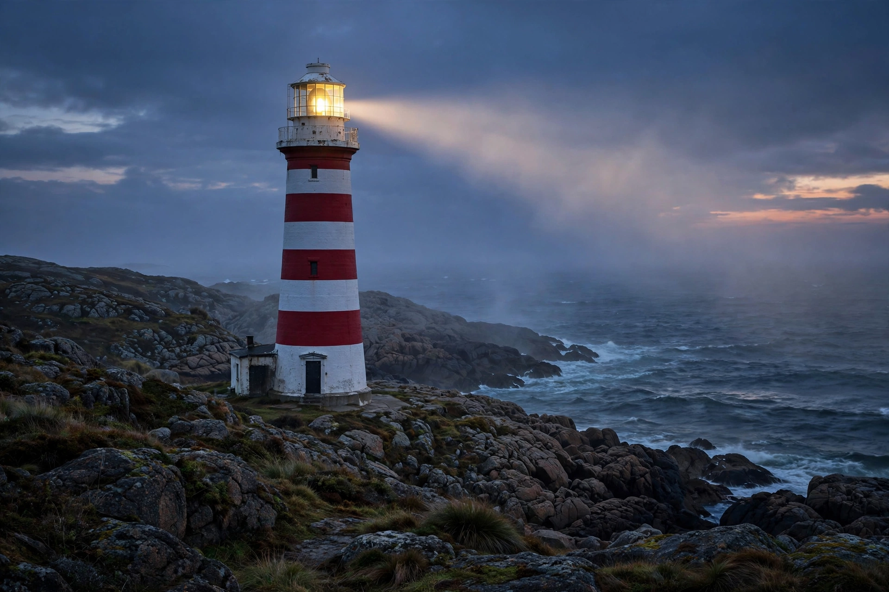

Lighthouse
From Wikipedia, the free encyclopedia

A lighthouse at dusk.A lighthouse is a tower or structure emitting light from a system of lamps and lenses to guide maritime navigation, marking dangerous coastlines, shoals and harbour entrances. Famous lights include the ancient Pharos of Alexandria — one of the Seven Wonders — the Eddystone Lighthouse off Plymouth, and the Statue of Liberty (briefly a lighthouse). Automation has replaced keepers almost everywhere, but thousands of lighthouses still operate, supplemented by GPS and electronic charts.
Optics and identification
Augustin-Jean Fresnel\'s stepped lens (1820s) concentrated light into a powerful beam visible over 20 nautical miles. Each light has a characteristic flash pattern and colour, listed on charts; daymarks (paint patterns) identify towers by day. Foghorns and radar beacons (racons) aid navigation in poor visibility.
History
The Pharos (3rd century BC) guided ships into Alexandria for over a millennium. John Smeaton\'s stone Eddystone tower (1759) pioneered interlocking masonry for wave-swept rocks. Trinity House (England and Wales), the US Lighthouse Service and similar bodies built networks through the 19th century.
Automation and heritage
The last British lighthouse was automated in 1998 (North Foreland), and resident keepers are now rare worldwide. Many towers are protected monuments or museums; lighthouse tourism and preservation societies maintain them as symbols of maritime heritage.